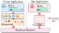
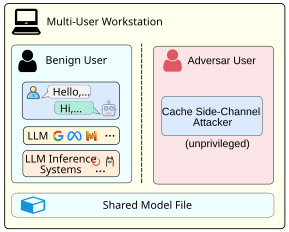
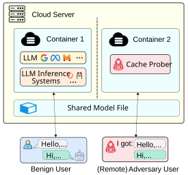

First image description.

Second image description.

Third image description.

In this paper, we find novel side-channel vulnerabilities in locally deployed LLM inference: token value and token position leakage, which can expose both the victim's input and output text. Specifically, we found that adversaries can infer the token values from the cache access patterns of the token embedding operation, and deduce the token positions from the timing of autoregressive decoding phases. To demonstrate the potential of these leaks, we design a novel prompt and response reconstruction attack targeting both open-source and proprietary LLM inference systems. The attack does not directly interact with the victim's LLM and can be executed without privilege.
We show that the proof-of-concept attack is feasible across 10 LLM inference frameworks, 5 distinct LLM architectures, and 3 different hardware configurations (including GPU-accelerated systems). We have disclosed our findings to CNVD.
▶ Execute a non-privileged code on the victim machine
▶ Obtain model file shared memory by either mmap() or page deduplication
▶ Flush cache line with clflush instruction

▶ The token embedding layer in LLM is offloaded to CPU due to restricted memory of consumer-grade GPU.
To further clarify the threat model, we describe two concrete attack scenarios here that adhere to its assumptions.
Attack Scenario 1: The attacker is another legitimate, non-privileged user (remotely or locally) operating on the same workstation machine. The two users share the same model file within the same operating system, allowing the attacker to execute mmap() on the file.

Attack Scenario 2: The attacker has access to a legitimate cloud container co-located on the same physical server as the victim. From within the container, the attacker launched a non-privileged cache prober.
Consistent with attack scenario 1, both containers operate within the same system, capable of accessing the identical model file, thereby permitting the attacker to execute mmap() system calls on the shared file.

The assumption on shared model file may hold true, as LLM model files typically occupy substantial storage space, and model file sharing could potentially conserve storage resources.
▶To the best of our knowledge, this work presents the first micro-architecture-level cache side-channel attack framework capable of approximately reconstructing both LLM prompts and response text.
▶We found unique cache side-channel patterns in LLM, including token value and positional leakage.
▶We fine-tune LLMs on synthetic data to mitigate noise in cache traces, utilizing both token text and timing signal features.
▶We introduce a new prompt reconstruction strategy that combines cache traces with the reconstructed response as contextual information.
We added a demo video and expanded on the threat model with a detailed explanation.
@inproceedings{gao2025ikwys,
author = {Gao, Zibo and Hu, Junjie and Guo, Feng and Zhang, Yixin and Han, Yinglong and Liu, Siyuan and Li, Haiyang and Lv, Zhiqiang},
title = {I Know What You Said: Unveiling Hardware Cache Side-Channels in Local Large Language Model Inference},
publisher = {USENIX Association},
booktitle = {Proceedings of the 34th USENIX Conference on Security Symposium},
year = {2025},
series = {SEC '25},
address = {USA},
location = {Seattle, WA, USA},
}